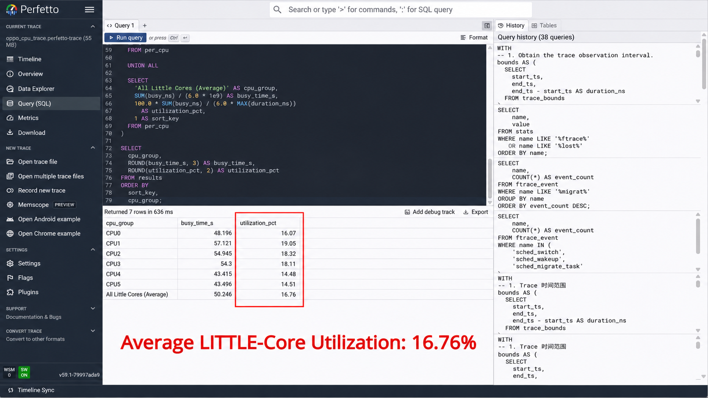

Demo Video
Summary
This video demonstrates the underutilisation of LITTLE cores on a real Android smartphone. With eight applications running in the background, we collect a system-wide Perfetto trace and analyse CPU scheduling activity. The six LITTLE cores (CPU0–CPU5) show an average time utilisation of only 16.76%, indicating substantial idle capacity. This observation motivates LeAP's use of spare LITTLE cores to perform address-generation and prefetching tasks for the big core.
Video Timeline
-
00:00
Hardware Platform Show the smartphone equipped with a MediaTek Dimensity 6300 processor, featuring six LITTLE cores (CPU0–CPU5) and two big cores (CPU6–CPU7). Check the Linux kernel version (5.15.197) using ADB.
-
00:12
Background Workload Show eight applications running in the background: Facebook, Instagram, YouTube, TikTok, ChatGPT, Gemini, X, and Gmail. These applications remain in the background during trace collection.
-
00:29
Trace Collection Record a five-minute system-wide Perfetto trace with a 64 MB buffer, capturing CPU scheduling, frequency, and idle-state events.
-
01:35
Utilization Analysis Open the collected trace in the Perfetto UI and execute an SQL query to calculate the time utilisation of each LITTLE core from CPU scheduling records. The six LITTLE cores exhibit an average utilisation of 16.76% during the measurement interval.
Measurement Results

README
View README
View the README for the accompanying explanation.